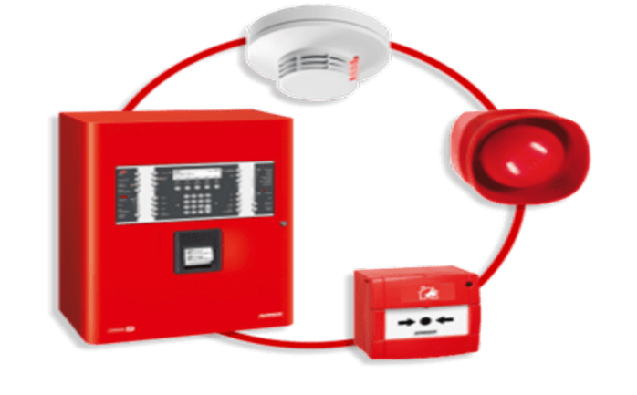
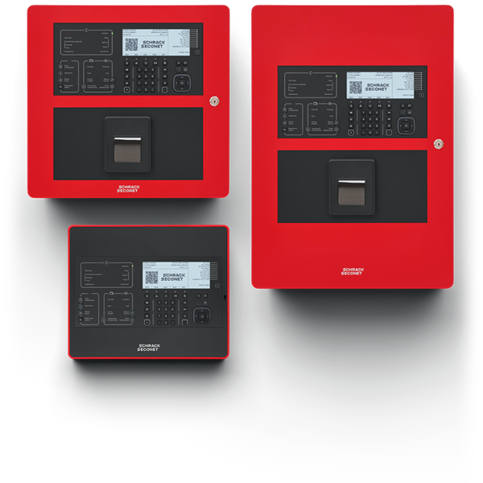
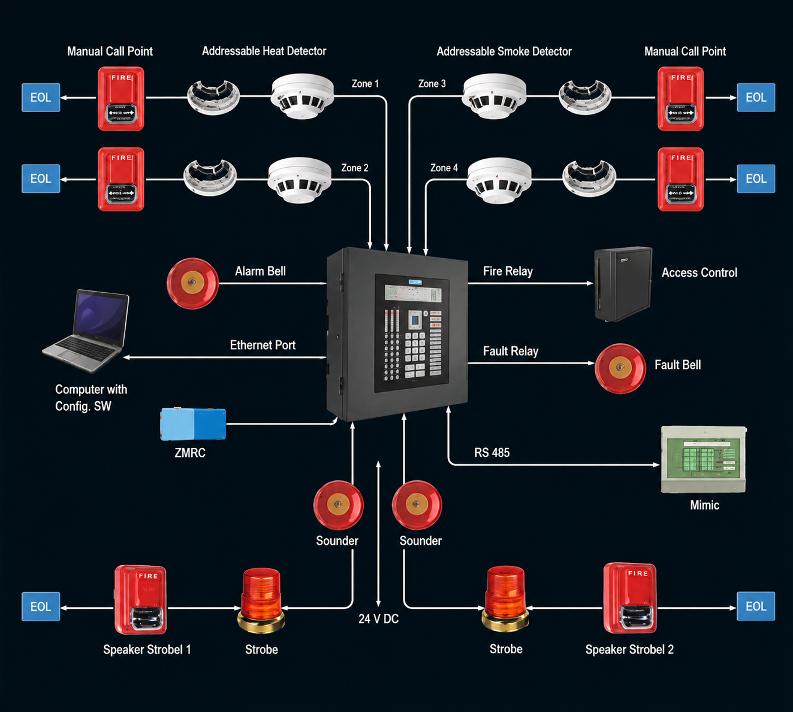
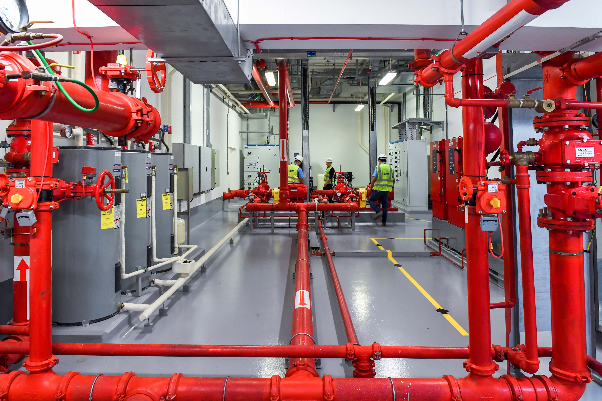

Advanced Fire Detection Systems: Protecting Lives and Assets
Introduction to Modern Fire Detection
Early fire detection is the most critical element in minimizing property damage and ensuring life safety.
Modern fire detection systems go far beyond basic smoke alarms. They utilize an interconnected network of intelligent sensors, control panels, and notification devices to identify thermal or chemical Signatures before a fire spread out of control.

Core Components of a Fire Detection System
Every commercial and industrial fire safety setup relies on four primary building blocks working in unison:

Fire Alarm Control Panel (FACP):
- Centralised Fire Alarm Panel (CFAP)
- Data Gathering Fire Alarm Panel (DGFAP)
- Repeater Panel (RP)
Initiating Devices:-
- Smoke Detector
- Multi-sensor Detector
- Heat Detector
- Intrinsically safe Detector
- Gas Detector
- UV Detector
- IR Detector
- CO Detector
- H2 Detector
- Linear Beam Detector
- LHS Cable
- Vesda
- Safe Area Manual Call Point (MCP)
- Hazardous Area Manual Call Point (FLP MCP)
Notification Appliances
- Loop Powered Flasher
- Loop Powered Hooter
- Electronic Flasher
- Electronic Hooter
- Siren
- Strobes
- Beacon
Human Machine Interface (HMI)
Core Functions of HMI
- Real-time monitoring: Display live metrics like- temperature, pressure, speed, and tank levels.
- Machine control: Allow users to start, stop, or change operational settings without manual switches.
- Alarm management: Flash warning lights or pop up messages when systems fail or face anomalies
Types of Fire Detection Technologies
Different environments require specific detection methods to maximize safety and eliminate costly false alarms.
Smoke Detection
- Photoelectric Sensors: Use a light-scattering chamber optimized to detect smoky, smouldering fires (common in electrical closets and living spaces).
- Ionization Sensors: Utilize a small radioactive trace to detect invisible combustion particles from fast-flaming fires.
- Aspirating Smoke Detection (ASD): High-sensitivity systems that continuously draw air samples through a pipe network. Ideal for data centres and cleanrooms.

Heat Detection
- Fixed Temperature Detectors: Trigger an alarm when a specific thermal threshold (e.g., 57°C / 135°F) is reached.
- Rate-of-Rise (RoR) Detectors: Activate if the ambient temperature increases rapidly within a short timeframe, regardless of the starting temperature.
Flame and Gas Detection
- Optical Flame Detectors: Monitor ultraviolet (UV) or infrared (IR) light spectrums to detect open flames instantly in hazardous zones.
- Carbon Monoxide (CO) Detectors: Track toxic gas levels build-up from incomplete combustion before fire signatures become visible.
Conventional vs. Addressable Systems

- Conventional Systems: Divide a building into general areas or "zones." While cost-effective for smaller businesses, they only indicate the general zone where the alarm triggered.
- Addressable (Intelligent) Systems: Assign a unique digital address to every single detector. They pin-point the exact location of the threat, track smoke progression, and allow for granular maintenance alerts.
Maintenance and Compliance Standards
To ensure reliability and legal compliance, fire systems must be regularly inspected according to regional safety standards (such as NFPA 72 or local building codes). Routine testing checklists include:
- Weekly or monthly control panel diagnostic checks.
- Semi-annual visual inspections of all structural sensors.
- Annual functional testing, sensitivity calibration and battery replacements.
Fire mishaps have always been on a rise, with fire accidents being almost correlated to the growth & development in the cities. With ever increasing industrial & commercial sectors, there are more than 13,000 fire incidents reported every year in India. The reason behind these ever increasing mishaps is the negligence of a fire alarm & detection system or the ineffectiveness of the existing age old systems which have been installed in the factories & commercial buildings since their inception. To cater to this problem we at Technocrats have innovated customer centric solutions which can be easily scaled & customised to suit the premises where the system is to be installed. With over 3 decades of experience in the field of fire alarm & detection systems. Technocrats have always been the first choice when it comes to fire alarm system integration.In order to effectively protect your employees & your business from any unforeseen fire mishap it is of prime importance to select the right type of fire alarm & detection system. Every business is different & so are the needs & requirements of every commercial premise. Hence, we at Technocrats Safety & Security Systems have devised the following types of fire alarm detection systems:
Our Work Process
- A detailed site survey is done by a team of engineers
- System Design is created & presented
- Import and Procurement of hardware is done as per the client’s specification
- Inspection, Pre-commissioning activities, and testing
- On-time delivery of your Services
- Mobilization of execution teams
- Erection, installation, commissioning, and integration of systems
- Training/documentation and smooth handover